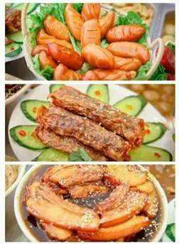
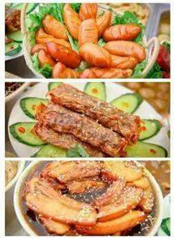
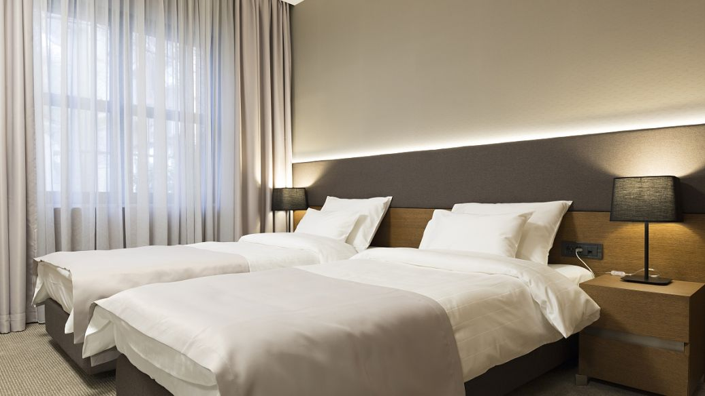

美食街区
(1)三坊七巷附近：安泰楼、老福州徐记、赵氏传承、栗记仙豆糕、林记油条包糍粑
(2)南后街：永和鱼丸、同利肉燕老铺、百饼园、木金肉丸老铺
(3)达明美食街：老福州(锅边糊)、岭南牛杂、陈记生煎
(4)南园路：彬德桥时粿铺、耳聋伯元宵、福屿捞化、没牙伯花生汤、轮工壹号煎饼老铺、美且有糕饼店
(5)其他美食街：交通路、西洪路、庆城路、老药洲、井大路、苍霞街、省府路、达道美食城
(6)夜市：安泰夜市、前峪夜市、南后街夜市、农大东门夜市、老药洲夜市

美食街区
(1)三坊七巷附近：安泰楼、老福州徐记、赵氏传承、栗记仙豆糕、林记油条包糍粑
(2)南后街：永和鱼丸、同利肉燕老铺、百饼园、木金肉丸老铺
(3)达明美食街：老福州(锅边糊)、岭南牛杂、陈记生煎
(4)南园路：彬德桥时粿铺、耳聋伯元宵、福屿捞化、没牙伯花生汤、轮工壹号煎饼老铺、美且有糕饼店
(5)其他美食街：交通路、西洪路、庆城路、老药洲、井大路、苍霞街、省府路、达道美食城
(6)夜市：安泰夜市、前峪夜市、南后街夜市、农大东门夜市、老药洲夜市

住宿与交通
住宿：建议住鼓楼区，比如上下杭/达明路附近，可以感受福州市井文化，地铁公交都很方便，并且美食聚集，年轻人众多。如果想感受西方老洋房的余晖，可以考虑仓山烟台山/中洲岛附近，文艺青年首选。
交通：福州长乐国际机场机场大巴直达。火车站：福州站、福州南站(高铁经停)等。地铁：目前福州已开通地铁1/2号线，下载码上行可扫码乘车。市内所有公交已开通扫码乘车，领取电子卡可扫码乘车。

出行路线
经典三日游
Day1：三坊七巷——基督教花巷堂——南后街——上下杭中平路——老药洲街
Day2：石厝教堂——华南女子文理学院——西湖公园——达明路——福道
Day3：平潭岛一日游or仓山区老洋楼闲逛喝咖啡
美食三日游
Day1：三坊七巷——南后街——上下杭——达明美食街
Day2：基督教花巷堂——温泉博物馆——老药洲街
Day3：中洲岛——泛船浦教堂——南园路